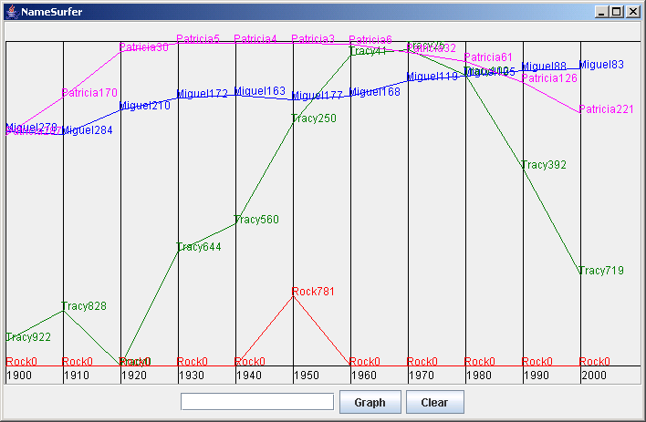

|
|||||||||
| PREV PACKAGE NEXT PACKAGE | FRAMES NO FRAMES | ||||||||
See:
Description
| Interface Summary | |
|---|---|
| INameInfo | Objects implementing INameInfo record information about a name and the popularity of that name over time. |
| INameList | Objects implementing INameList are used to collect names with popularity rankings to be graphed in the NameSurfer application. |
| INameSurferModel | |
| Class Summary | |
|---|---|
| SampleNameInfo | Information about the popularity of one name. |
| SampleNameList | A list of names and their rankings. |
| SampleNameSurferModel | The model for the nameSurfer program specifies which names to graph. |
| SampleNameSurferView | A view that accepts a name from the user and graphs the popularity ranking for that name across time. |
NameSurfer graphs names and their popularity over time as gathered from United States Social Security Administration data. It is inspired by a program of the same name presented by Nick Parlante in the Nifty Assignments Panel at SIGCSE 2005.
The running program looks like this:
Running the Program
Students will typically write a main method such as the following
import becker.xtras.nameSurfer.*;
import javax.swing.JFrame;
import javax.swing.JPanel;
public class NameSurfer extends Object
{
public static void main(String[] args)
{ INameList data = new SampleNameList("names-data.txt");
INameSurferModel model = new SampleNameSurferModel(data);
JPanel view = new SampleNameSurferView(model);
// display the view in a frame
JFrame f = new JFrame("NameSurfer");
f.setSize(600, 500);
f.setDefaultCloseOperation(JFrame.EXIT_ON_CLOSE);
f.setContentPane(view);
f.setVisible(true);
}
}
where NameList and NameSurferModel can be either student-written
classes implementing the INameList and INameSurferModel interfaces or classes from the nameSurfer
package. NameSurferView may be either student-written or from the
nameSurfer package. It should extend JPanel and implement
IView.
The data file is available for download here.
|
|||||||||
| PREV PACKAGE NEXT PACKAGE | FRAMES NO FRAMES | ||||||||